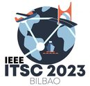

|
Jaebong Lim I am a Ph.D. student at Pusan National University (PNU) in South Korea, where I work on driver behavior analysis and machine learning. I obtained my B.S., and M.Sc. degrees advised by Prof. Yunju Baek in School of Computer Science and Engineering from Pusan National University (PNU) in 2016 and 2018, respectively. I am currently pursuing the Ph.D. degree. Email / CV / Google Scholar / |
{kind=link}
|
PNU |
Virginia Tech |
|
|---|
Ph.D. ThesisDeep Learning Model and Early-Exiting Method for Low-Latency and Reliable Driver IdentificationDriver identification systems that use deep-neural-network-based sequential models have been studied for personalized intelligent vehicles. After a vehicle starts moving for a trip, the system identifies the driver at each time step using accumulated driving sensing data. We propose a novel driver identification system with temporal early exiting to identify a driver as early as possible while maintaining accuracy. Existing systems require entire-trip data or fixed-length partial trip data, regardless of driver identification difficulty. The proposed system automatically identifies the driver with less driving data for easy-to-identify trips and more driving data for hard-to-identify trips. To adaptively exit the identification by considering the difficulty of a trip, we propose a temporal early-exiting method by thresholding the confidence score. Sequential models output an identified driver and confidence score at each time step. However, the confidence score of deep neural networks is unreliable owing to the overconfidence problem. To overcome this problem, we propose three temporal confidence calibration methods that adjust the calibration strength according to the driving time and trip difficulty. Thus, the system can determine the best time to exit the identification, considering the trade-off between latency and accuracy. Our experiments on a naturalistic driving dataset show that the proposed system achieved 90.06% accuracy with early exiting at an average of 6.7 min, yielding the same accuracy with 74.2% latency reduction compared with driver identification with 26 min of fixed-length data for each trip. |
ResearchI'm interested in hardware-aware automated machine learning (automl) and neural network compression. Much of my research is about inferring the context from time-series sensor data. Representative papers are highlighted. |
|
Temporal Early Exiting With Confidence Calibration for Driver Identification using Driving Sensing Data
Jaebong Lim, Yunju Baek, Bumhee Chae IEEE Access, 2022 Proposed system identifies the driver with less driving data for easy-to-identify trips and more driving data for hard-to-identify trips. To adaptively exit the identification by considering the difficulty of a trip, we propose a temporal early-exiting method by thresholding the confidence score and three temporal confidence calibration methods that adjust calibration strength according to the driving time and trip difficulty. |
|
|
Joint Framework of Curriculum Learning and Knowledge Distillation for Noise-Robust and Small-Footprint Keyword Spotting
Jaebong Lim, Yunju Baek IEEE Access, 2023 This paper presents the first study on a joint framework of curriculum learning and knowledge distillation for noise-robust and small-footprint keyword spotting. The main finding is that distilling a small network after applying curriculum learning to the large teacher network is superior to directly applying curriculum learning to the small network. |
|
|  |
Open-Set Driver Identification System Based on Metric Learning with Driving Situation Awareness
Jaebong Lim, Yunju Baek IEEE ITSC, 2023
|
|
User-Defined Keyword Spotting Utilizing Speech Synthesis for Low-Resource Wearable Devices
Jaebong Lim, Yunju Baek IEEE ICCE, 2022
|
|
|
CamThings: IoT Camera with Energy-Efficient Communication by Edge Computing based on Deep Learning
Jaebong Lim, Juhee Seo, Yunju Baek ITNAC, 2018
|
|
|
Design and Implementation of Driving Information Collection System for Driver Behavior Analysis
Beomjun Kim, Juhee Seo, Jaebong Lim, Yunju Baek ACM MobiSys, 2018 (Poster)
|
|
|
Design and Implementation of Camera Network Platform for Information Exchange using Dual Wireless Interface
Beomjun Kim, Sanghyun Son, Jaebong Lim, Yunju Baek ITNAC, 2016
|
|
Template from this awesome website. |